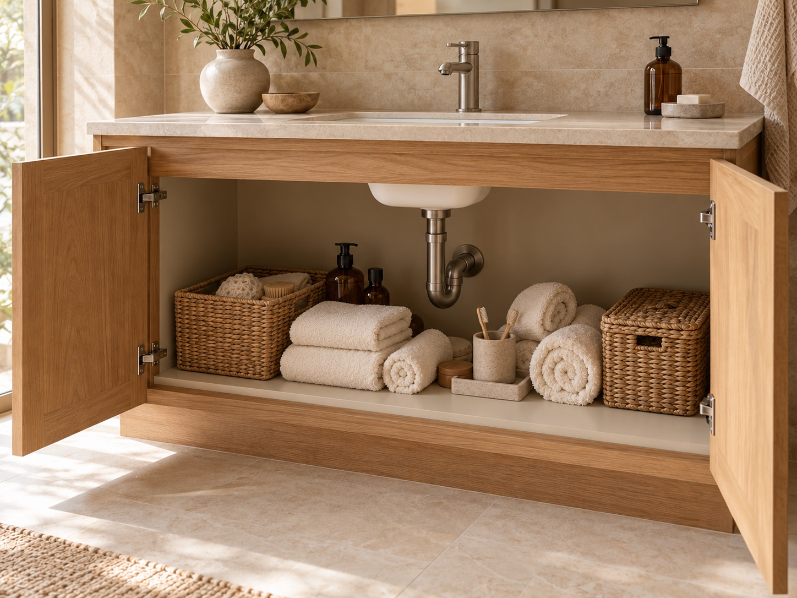

Measure the cabinet
Note the usable inside width, depth, and height. Include the door opening and any hinges that take up space.
Make the space you have work better
Pipes in the way? Bottles piled on the bottom? SpaceMax is shelving designed around your cabinet, your plumbing, and the things you use.
More usable space. Less everyday clutter.
For the home you already live in.
 THE SPACEMAX UNDER-SINK SYSTEM
THE SPACEMAX UNDER-SINK SYSTEMSized for your cabinet
Shaped around your plumbing
Organized around your essentials
The problem with the space under your sink
Bottles pile up on the bottom while the space above them goes unused. The pipes interrupt the layout. Things disappear at the back, and tidying up means rearranging the same pile.
You try an organizer. It's too wide, too short, or in the way of the drain. There's room in your cabinet—just no good way to use it.
Staying organized is harder when nothing quite fits. A better layout gives everything a place to go back to.

Illustrated comparison of the same space. Not a customer installation.
The solution
SpaceMax starts with the cabinet you already have. The shelving layout is shaped around its width, depth, height, and plumbing, so awkward gaps can become useful storage.
Stack everyday essentials on shelves. Group the small things together. Give the pipes their own space. The result we're designing for: a clean, fitted look that's easier to keep organized.
The product, explained
A custom-fit shelving insert for your existing sink cabinet. Designed to add storage levels around the plumbing and create a cleaner, more organized interior.
Illustrative layout · Shelf positions depend on your space.
The width, depth, and usable height guide the fit. Storage levels make use of the empty space above the cabinet floor.
Use the height you're currently wasting.A dedicated plumbing area keeps shelves out of the way. The design can include a pipe surround for a cleaner look, with access planned for valves and maintenance.
Make the awkward part part of the plan.Plan shelf clearance for tall bottles, folded towels, and baskets of small essentials, so frequently used things stay easy to reach.
See it. Reach it. Put it back.Product design preview. Materials, final specifications, and pricing are still being finalized.
Why a custom fit matters
A fixed-size organizer can leave awkward gaps or take up too much room.
Start with the usable dimensions of your cabinet.
A shelf can collide with the drain or get in the way of a shutoff valve.
Plan shelf positions and access around the actual pipes.
Tall bottles don't fit. Small items end up hidden behind larger ones.
Use what you store to guide the layout and shelf clearance.
Less clutter to look at. Less to keep track of.
When the things you use have a place, there's less digging, less reshuffling, and less to put off until later. That's what better storage should do for you.
Start with your own space
Note the usable inside width, depth, and height. Include the door opening and any hinges that take up space.
Note where the pipes, drain, and valves sit. Leave room to reach them, and take a photo for reference.
What goes here every day? Note your tallest bottles, towels, baskets, and anything that needs its own spot.
Our planner saves your measurements and notes in a file you can download. Final fit needs confirmed measurements and a review of your space.
Before you plan your space
The SpaceMax Under-Sink System is a custom-fit shelving insert designed for the inside of your existing sink cabinet. The proposed layout adds shelves around the plumbing and can include a pipe surround. The cabinet, sink, baskets, towels, and bottles in the images provide context; they are not the product being offered.
Instead of starting with a fixed shelf size and trying to squeeze it in, the SpaceMax approach starts with your cabinet dimensions, the position of your pipes, and what you need to store. Those details guide the shelving layout.
A pipe surround is part of the design direction for a cleaner-looking interior. Its suitability depends on your plumbing. Any final layout needs to keep shutoff valves, joints, and maintenance access reachable; the exact design must be checked for your space.
That depends on its interior dimensions, door opening, hinges, plumbing, and what you want to store. Start by recording those details. The planner does not confirm compatibility; a final design would need a review of your actual cabinet.
Ordering is not open in this preview, and pricing has not been finalized. You can explore the product and save your measurements now. No request, order, or payment is submitted through the planner.
Make more of the home you have
Start with the cabinet under your sink.